SEMANTIC MAPPING & OBJECT-GOAL NAVIGATION
InFrame
실내에서 목표물을 찾아, 시야에 담고 멈추는 로봇.
43초에 멈춘 이유 첫 STOP과 1.5초 뒤 비교
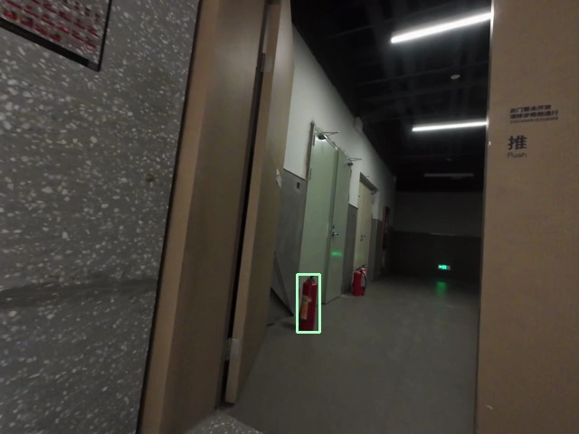
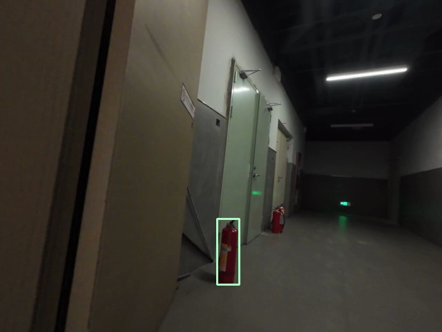
실영상 평가에서는 중앙 화면에서 소화기 본체를 식별할 수 있고 높이가 화면의 약 10% 이상인 구간을 미리 표시했습니다. 이 복도의 유효 구간은 42.75–45.00초이고, H4는 43.00초에 첫 STOP을 냈습니다. 1.5초 뒤 촬영자가 다가가자 같은 본체가 약 1.48배 크게 보였습니다.
이 단안 영상에는 미터 단위 기준점이 없어 로봇과 목표 사이 거리, 지정 관측점까지의 0.8 m 도달 여부는 측정할 수 없습니다. 사전 판독 기준 ↗ · 정지 기록 ↗
ObjectNav
“이 물체를 찾아 보여줘.” InFrame의 과제는 지정된 종류의 물체가 보이는 위치까지 이동해 사진을 남기는 것입니다. 지도에 등록한 개체 ID를 마지막 카메라 프레임과 대조하면, 로봇이 어느 물체 앞에서 멈췄는지 확인할 수 있습니다.
Castle에서 의자·쓰레기통·소화기를 찾도록 학습한 H4에 물체 이름을 입력할 수 있습니다. 같은 출발점에서 목표만 바꾸면 H4가 전방 RGB로 이동과 정지를 결정합니다. 경로와 정지 사진 비교 ↗
시스템 프레임워크
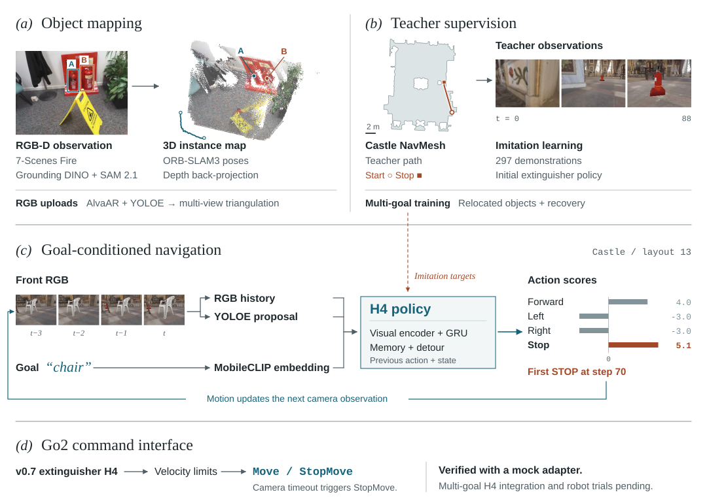
접근 순서
영상에서 물체의 위치를 찾기
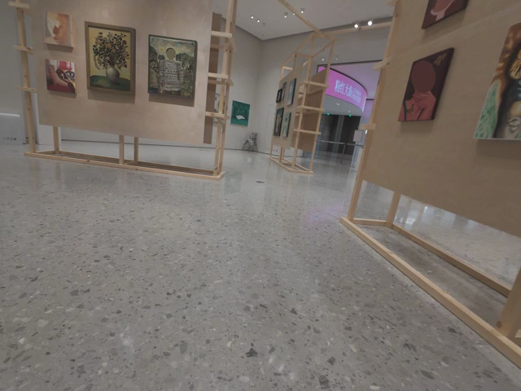
12.00 s실내 RGB 영상카메라가 전시장을 가로질러 의자가 놓인 벽으로 다가갑니다. 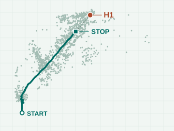
SLAM 궤적과 개체 지도AlvaAR 특징점과 카메라 궤적을 위에서 본 지도입니다. H1은 여러 시점으로 추정한 의자 위치이며, 단위는 상대 척도입니다. 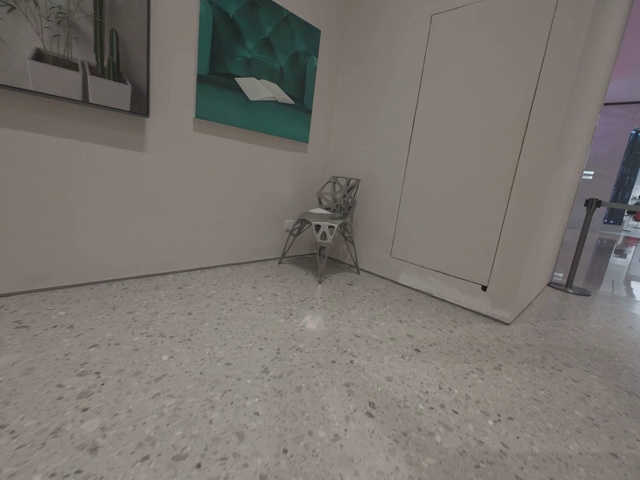
STOP · 28.00 s지도와 연결된 정지 사진YOLOE가 같은 의자를 연속으로 확인한 첫 STOP입니다. 상자는 그 시점의 검출 범위입니다.
지정한 물체까지 주행하기
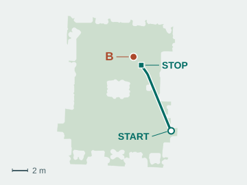
목표 선택과 경로쓰레기통 B를 선택한 주행입니다. 로봇은 FRESH-015에서 출발해 등록된 관측점으로 향합니다. 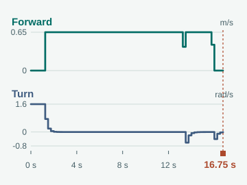
전진·회전 명령0.25초마다 기록한 속도 명령입니다. 처음에는 방향을 틀고, 목표 앞에서는 전진을 멈춰 시야를 맞춥니다. 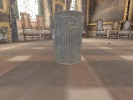
STOP · 16.75 s로봇 시점의 정지 사진9.47 m 이동한 뒤의 전방 RGB입니다. B가 보이고 로봇과 지정 관측점 사이의 거리는 0.11 m입니다.
SEMANTIC MAP · 7-SCENES FIRE
사진 속 물체를 3D 지도에서 찾기
같은 종류의 물체에도 서로 다른 ID를 부여합니다. A와 B를 선택하면 Fire 장면의 두 소화기 중 같은 개체가 사진과 점군에서 함께 강조됩니다.
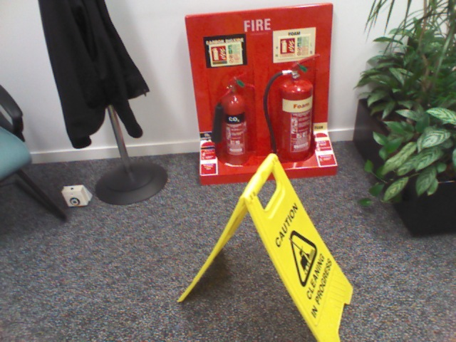
ARGB FRAMEINTERACTIVE SIMULATION
Go2 ObjectNav
지도에서 출발 위치를 찍고 주행을 시작하세요. 같은 성 안에서 목표를 바꾸면 지도에 등록한 관측점으로 이동하고 전방 RGB로 물체를 확인해 멈춥니다.
초록색은 로봇 중심이 이동할 수 있는 바닥, 회색은 주행 범위 밖입니다. 지도를 누르거나 방향키로 출발점을 옮기세요. 주행 중에는 화살표가 로봇을 따라갑니다. 3D 화면을 드래그하면 시점을 돌릴 수 있습니다. 이번 주행 기록 ↓
지도 기반 비교 주행
주행 기록 ↗FRESH-015에서 출발 위치와 방향을 고정했습니다. 지도에서 고른 관측점까지 이동한 뒤 소화기는 H4, 의자·쓰레기통은 YOLOE 연속 관측으로 정지합니다. 목표 개체가 정지 사진에 보이고 등록 관측점까지 0.8 m 이내인지 확인했습니다.
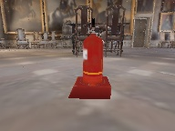
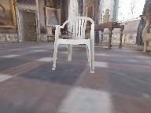
EXPERIMENTS
무엇을 어디까지 검증했나
Castle 자율주행
같은 장면의 미사용 출발 자세 60곳. 지정 관측점까지 주행 거리 0.8 m 이내에서 STOP하고, 사진에서 같은 개체가 보여야 성공입니다.
실제 영상의 첫 STOP
처음 쓴 촬영본 9편에서 두 정책을 같은 경로로 재생했습니다. 목표가 보인 5편 중 4편에서 유효 정지했고 대조 영상 4편의 오정지는 0회였습니다.
Go2 모의 정지 명령
카메라 입력을 끊은 10회 모두 호스트가 StopMove를 호출했습니다. 기체의 실제 제동은 후속 실험입니다.
Try your own data
내 영상에서 카메라 동선, 검출된 목표물, 첫 STOP 사진을 확인하세요. 찾을 물체의 이름을 직접 입력하세요.